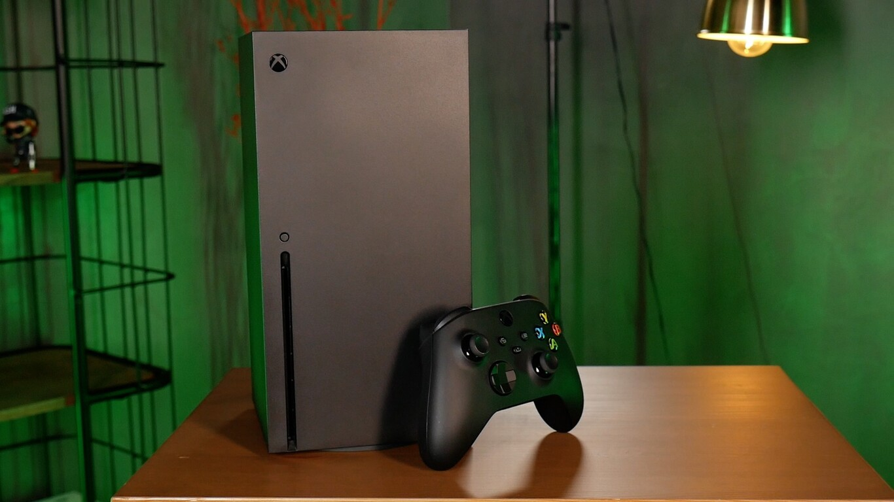
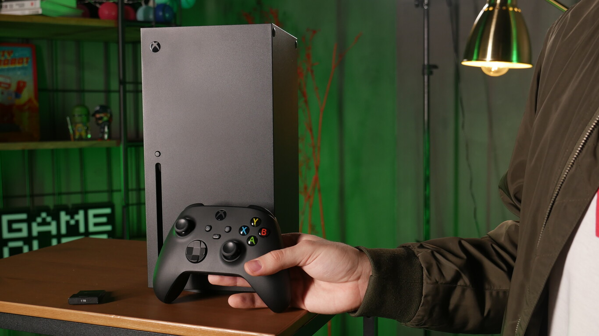
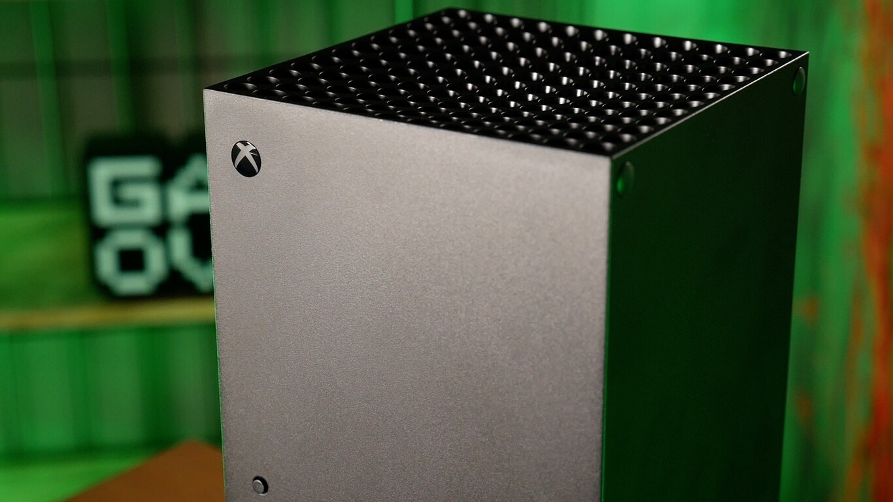
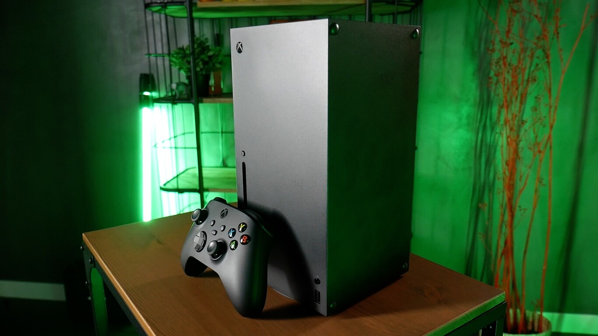

Xbox Series X, primeras impresiones: Microsoft entra por todo lo alto en la nueva generación
"Cuando uno pasa unos días con Xbox Series X saca en claro varias conclusiones, pero una de las más patentes es que Microsoft lleva muchos años preparándose para este salto generacional. Después de un ciclo de máquinas donde con Xbox One no podemos decir que compitieran hasta la llegada del modelo mejorado X (y no lo hicieron de inicio por precio de salida excesivo, por potencia insuficiente y por lastres como Kinect entre otras consideraciones); en esta ocasión sí dan la sensación de estar perfectamente preparados en cuanto a hardware para aspirar a todo.
Hablamos de una videoconsola de un tamaño muy estudiado, un diseño muy compacto y unas prestaciones extraordinarias. Una a la que he sometido a exhaustiva observación estos días, para asegurarme de si sufre o no ese tipo de cosas que atentan contra la comodidad del usuario. Y eso que los tests han sido duros. Una noche entera descargando juegos y, sin apagarla, el día siguiente completo sometiéndola a todo tipo de pruebas con los juegos más punteros que están disponibles para ella en estos momentos.
Monstruos de la anterior generación como 'DOOM Eternal' o 'Red Dead Redemption 2', que me han permitido comprobar cómo la máquina no emite sonidos de ventilación y, además, parece disipar el calor correctamente para apenas subir unos pocos grados de temperatura incluso después de una sesión maratoniana. Ha habido quejas sobre esto a través de un medio norteamericano pero, en mi experiencia personal, no los he sufrido. De todos modos, para sacar conclusiones claras en este sentido habrá que esperar más tiempo, por supuesto.
La Xbox Series X es muy silenciosa y no parece calentarse, al menos en nuestra primera toma de contacto con ella
Así que podemos hablar de una máquina muy silenciosa, sin tendencia al calentamiento y con una estética discreta y nada estridente, ideada para encajar perfectamente en cualquier lugar del salón de casa. Microsoft no quiere un hardware aparatoso que distraiga la atención ni lo más mínimo con su aspecto exterior de lo que de veras es relevante, su imponente interior.
Toda una apuesta por la comodidad del usuario
Y el gran lema que han empleado, podríamos decir, es el centrado en la comodidad del usuario. Los 12 teraflops de la máquina, su robusto combo CPU-GPU y lo cuidado de la videoconsola son argumentos de peso, sin embargo por lo que creo que recordaremos a la máquina en el futuro es por haber sido la plataforma que más ha hecho por mejorar la calidad de vida del jugador, y lo hace en infinidad de frentes.
En algunos tan obvios como, por ejemplo, el acelerado de los tiempos de carga que deja en segundos el arranque de juegos que en la anterior generación podían alargarse varios minutos. Es una gozada comprobar cómo se acortan unas esperas que antaño podían ser excesivamente largas, y no solo en cuanto al inicio sino también, por ejemplo, después de sufrir muertes y tener que esperar el checkpoint.
También se percibe en funciones como el Quick Resume que nos permite coger el testigo de un título donde lo dejamos en cuestión de instantes, ahorrándonos tener que recorrer los menús y las siempre agotadoras primeras cargas... incluso tras haber apagado la consola. Eso supone que, por ejemplo, si estamos esperando a nuestros amigos en, por poner el caso, 'Sea of Thieves' para rellenar la tripulación de nuestro barco, en Xbox One teníamos que tirar de mirar cosas en internet a través del teléfono o levantarnos para prepararnos un sándwich de cara a hacer más liviana la espera mientras contemplamos el vestíbulo del juego.
Los 12 teraflops de la máquina, su robusto combo CPU-GPU y lo cuidado de la videoconsola son argumentos de peso, sin embargo por lo que creo que recordaremos a la máquina en el futuro es por haber sido la plataforma que más ha hecho por mejorar la calidad de vida del jugador, y lo hace en infinidad de frentes
Sin embargo, el fuerte más obvio es el de la fuerza bruta de la videoconsola. Con un Phil Spencer con argumentos de sobra para sostener que se trata de "la consola más potente jamás creada", la compañía norteamericana se agarra a las entrañas de su bestia para dejar claro que se trata del mejor lugar donde disfrutar de los títulos multiplataforma. Visto el precedente de Xbox One X, no sólo por sus caballos sino por su cómoda arquitectura, no parece que se vayan a equivocar ni un ápice en este sentido.
A esto hay que sumar la política de servicios que ha ido afianzando el fabricante durante toda esta generación que está a punto de concluir, con un Xbox Game Pass como auténtica joya de la corona. ¿En resumen? Todos los videojuegos de carácter exclusivo disponibles desde el día 1 y sin coste adicional a la suscripción, y una estupenda selección de lanzamientos de terceros disponibles. Todo esto consolida una oferta irreprochable para alcanzar a todos los perfiles de usuario.
El software exclusivo aún no está a la altura del potencial
Hay pegas, claro. Por ejemplo, que su software exclusivo deja menos motivos para la alegría a corto plazo. El buque insignia de la plataforma iba a ser 'Halo Infinite', sin embargo su decepcionante puesta en escena hace unos meses obligó a retrasar su lanzamiento para dar más tiempo al equipo.
Es una forma muy discutible de poner de largo tu franquicia estrella, eso está claro, pero también deja muchas dudas sobre la compañía a nivel corporativo… ¿No se hubiera pospuesto su lanzamiento de no ser por la reacción popular? ¿Quién supervisó ese contenido y dio luz verde a su presentación? ¿Te juegas todo el catálogo de lanzamiento a una carta y no lo tienes todo atado para que sea un triunfo? Si en cuanto a la dirección de diseño y manufactura de las videoconsolas no tengo duda alguna sobre la valía y liderazgo del equipo norteamericano, sobre la gestión que Matt Booty está haciendo de los estudios internos tengo una opinión bastante menos firme.
Una retrocompatibilidad a la que no se le puede pedir más
Por el momento tenemos que "conformarnos", y el entrecomillado es de obligada matización ante lo valioso que es lo que viene a continuación, con una retrocompatibilidad a la que es difícil exigirle nada más. Soporte para las tres generaciones anteriores (en un número de videojuegos que va creciendo), implementación de mayor resolución y frame-rate en, por ejemplo, lanzamientos de Xbox 360 o de la primera Xbox, acortado brutal de sus tiempos de carga y, además, incluso la llegada de técnicas de ray-tracing para títulos que no lo soportaban en ninguna de sus versiones originalmente.
Tres vértices de una auténtica magia negra que hace que, si te faltan obras antiguas por jugar, esta sea la versión de consola idónea para disfrutarlas. De hecho, tengo muchas ganas de que desde la división de Microsoft expliquen los entresijos tecnológicos de cómo se logra tamaña gesta, porque sin duda hay mucho que aprender ahí.
Insisto en que siempre que el software original lo soporte porque, por ejemplo, 'Red Dead Redemption 2' sí acorta notablemente los tiempos de carga, pero tiene fijados a 30 frames por segundo su acabado técnico, y ya funcionaba a 4K nativos si lo disfrutamos en Xbox One X. De momento la selección de títulos que hemos podido probar es limitada, pero nos esperan unos meses formidables de ir descubriendo poco a poco cómo mejoran otros tantos videojuegos.
El combo de carga rápida + gráficos mejorados hace que el mimo puesto en lo retrocompatible sea el gran puntal de la plataforma en estos momentos. He disfrutado enormemente con los incrementos visuales, la aplicación de ray-tracing y la nitidez extra que se incorpora a juegos de la primera Xbox como, por ejemplo, 'Destroy All Humans'.
Es un paso más allá de lo que veíamos en la, por lo demás, ya de por sí alucinante experiencia que estos títulos deparaban en Xbox One. Es muy fácil, y con apenas unos minutos de experiencia, darse cuenta de que esto no es una mera cuestión de hacer que algo sea compatible o no lo sea; todos los lanzamientos antiguos tienen un enorme trabajo detrás en cuanto a implementaciones y testeo.
Lo mismo sucede con los juegos de Xbox 360. Es difícil explicar con palabras cómo recuerda uno la experiencia de jugar a 'GTA IV' en la consola original, con un apartado gráfico increíble para su momento pero con algunos problemas de fluidez en momentos concretos, y cómo es ahora con esa resolución 4K y esos 60FPS estables.
Todo esto ayuda a apoyar la idea de que Series X es para todo tipo de jugadores, los que buscan el potencial visual de la novedad y los que no se olvidan de los catálogos de tres consolas precedentes y casi 20 años de historia de los videojuegos que están a nuestro servicio y que lucen mejor que nunca. Eso tiene un valor inmenso.